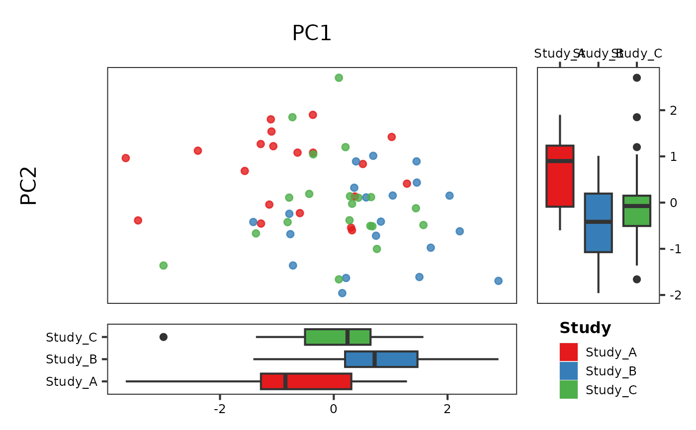
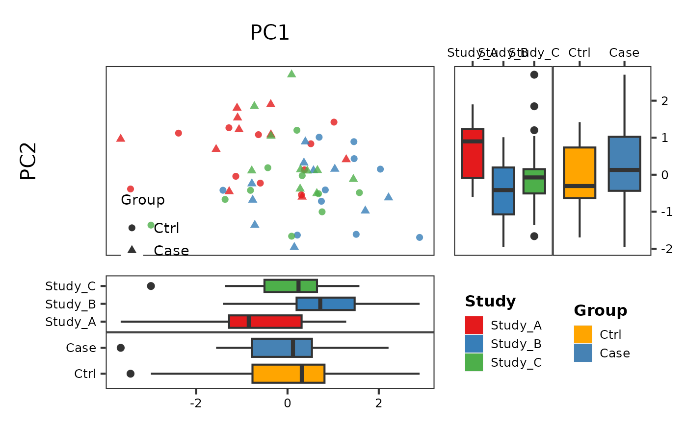
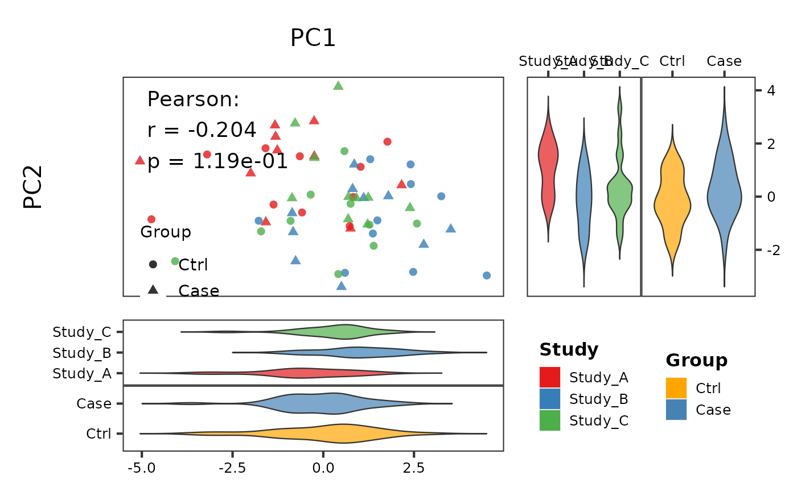

Dual-Group Scatter Plot with Multi-Variable Marginal Boxplots
Source:R/PlotScatter2.R
PlotScatter2.RdScatter plot supporting two grouping variables (colour + shape) with separate marginal boxplots for each grouping variable. Right-side panels show column-wise boxplots, bottom panels show row-wise boxplots, arranged via patchwork area layout. Suitable for multi-cohort PCoA/NMDS analysis or two-factor gene correlation plots.
Usage
PlotScatter2(
data,
x,
y,
group,
group2 = NULL,
colors = NULL,
shapes = NULL,
fill_colors_shape = NULL,
point_size = 2,
point_alpha = 0.8,
show_ellipse = FALSE,
show_cor = FALSE,
cor_method = "pearson",
show_regression = FALSE,
reg_method = "lm",
annot_text = NULL,
annot_pos = NULL,
annot_size = 5,
xlab = NULL,
ylab = NULL,
x_top = TRUE,
marginal_type = c("boxplot", "violin", "violin_box"),
box_width = 0.7,
base_size = 16,
legend_color_pos = "none",
legend_shape_pos = c(0.15, 0.15),
layout_main = 10,
layout_margin = 3,
filename = NULL,
width = 14,
height = 12,
dpi = 300
)Arguments
- data
A data.frame.
- x
Column name for the X axis.
- y
Column name for the Y axis.
- group
Column name for colour grouping (e.g. Study).
- group2
Column name for shape grouping (e.g. Group). NULL = no shape grouping.
- colors
Named colour vector for
grouplevels. NULL = auto palette.- shapes
Named shape vector for
group2levels. NULL = auto.- fill_colors_shape
Fill colours for
group2in marginal boxplots. NULL = auto.- point_size
Point size. Default 2.
- point_alpha
Point transparency. Default 0.8.
- show_ellipse
Whether to draw group ellipses (based on
group). Default FALSE.- show_cor
Whether to auto-compute and display correlation. Default FALSE.
- cor_method
Correlation method: "pearson" or "spearman". Default "pearson".
- show_regression
Whether to show a regression line. Default FALSE.
- reg_method
Regression method: "lm" or "loess". Default "lm".
- annot_text
Annotation text in main plot (e.g. PERMANOVA). NULL = none. Manual input overrides
show_corauto text.- annot_pos
Annotation position c(x, y). NULL = auto top-left.
- annot_size
Annotation text size. Default 5.
- xlab
X axis label. NULL = column name.
- ylab
Y axis label. NULL = column name.
- x_top
Whether to place X axis on top. Default TRUE.
- marginal_type
Marginal plot type: "boxplot", "violin", or "violin_box".
- box_width
Box/violin width in marginal plots. Default 0.7.
- base_size
Base font size. Default 16.
- legend_color_pos
Colour legend position. Default "none" (shown via marginal boxes).
- legend_shape_pos
Shape legend position. Default c(0.15, 0.15).
- layout_main
Main plot grid size (rows/cols). Default 10.
- layout_margin
Marginal plot grid size (rows/cols). Default 3.
- filename
Output file path. NULL = no save.
- width
Output width in inches. Default 14.
- height
Output height in inches. Default 12.
- dpi
Output resolution. Default 300.
Details
For single-group scatter with marginal boxplots, see [PlotScatter1()]. For paired scatter with rotated histogram inset, see [PlotScatter3()].
See also
Other scatter plots:
PlotScatter1(),
PlotScatter3()
Examples
library(ggplot2)
# Simulated multi-cohort PCoA data
set.seed(42)
df <- data.frame(
PC1 = c(rnorm(20, -1), rnorm(20, 1), rnorm(20, 0)),
PC2 = c(rnorm(20, 0.5), rnorm(20, -0.5), rnorm(20, 0)),
Study = rep(c("Study_A", "Study_B", "Study_C"), each = 20),
Group = rep(c("Ctrl", "Case"), 30)
)
# Single grouping (colour only)
PlotScatter2(df, x = "PC1", y = "PC2", group = "Study")

# Dual grouping (colour + shape)
PlotScatter2(df, x = "PC1", y = "PC2",
group = "Study", group2 = "Group")

# With correlation and violin marginals
PlotScatter2(df, x = "PC1", y = "PC2",
group = "Study", group2 = "Group",
show_cor = TRUE, marginal_type = "violin")
